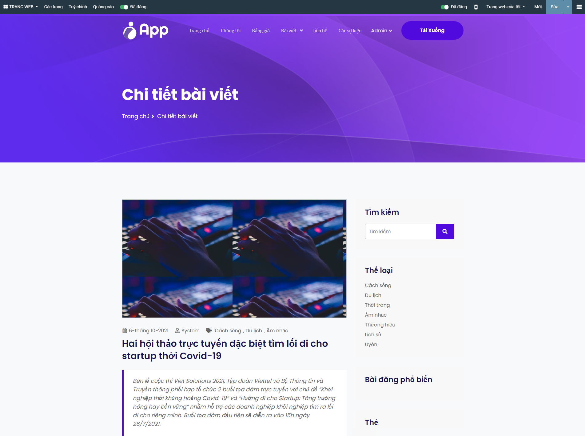

Quy trình nghiệp vụ
Quản lý toàn bộ quá trình tạo dựng trang Web: Từ thiết lập chủ đề trang Web, Cấu hình quản lý truy cập, phân tích thông tin. Đồng thời, cho phép người dùng Viết bài, Đăng bài, Xem bài viết trên trang Web và quản lý lượng Khách truy cập website.
Quy trình

Các luồng quy trình * Thiết lập, cài đặt trang Web. Chi tiết nghiệp vụ tại đây. * Viết bài, Đăng bài và Xem bài viết. Chi tiết nghiệp vụ tại đây. * Quản lý Khách truy cập trang Web. Chi tiết nghiệp vụ tại đây.
Mô tả nghiệp vụ
Khi có nhu cầu tạo dựng một trang Web, người dùng thực hiện các bước theo quy trình sau:
- Quản trị viên thiết lập trang Web.
- Quản trị viên sẽ cấu hình quản lý truy cập, phân tích thông tin trang Web.
- Sau khi đã tạo dựng khung hình và cấu hình trang Web, người dùng có thể vào viết bài, đăng bài trên Website.
- Xem bài viết đã được đăng tải trên Website.
- Theo dõi lượng Khách truy cập trang Web.
Luồng chức năng chính * Chọn chủ đề IApp. Chi tiết nghiệp vụ tại đây. * Thiết lập menu. Chi tiết nghiệp vụ tại đây. * Thiết lập giao diện trang Web. Chi tiết nghiệp vụ tại đây. * Viết bài và Đăng bài. Chi tiết nghiệp vụ tại đây. * Xem chi tiết bài viết trên Website. Chi tiết nghiệp vụ tại đây. * Theo dõi Khách truy cập. Chi tiết nghiệp vụ tại đây. * Theo dõi Lượt xem trang Web. Chi tiết nghiệp vụ tại đây.
Thiết lập trang Web
Quản trị viên thiết lập trang chủ, tạo dựng bộ khung ban đầu để hình thành nên trang Web.
Đối tượng thực hiện: Quản trị viên
Chọn chủ đề IApp
- Vào phân hệ Trang Web, chọn Cấu hình. Nhấn Chọn một chủ đề:

- Tiến hành chọn chủ đề IApp cho Website:


- Nhấn Cập nhật chủ đề
- Đợi ít phút để Website áp dụng chủ đề IApp lên hệ thống:

- Sau khi hoàn thành cài đặt chủ đề, nhấn chọn Đi đến trang web

- Trang Web hiển thị giao diện của trang chủ:

Thiết lập menu
- Vào Cấu hình trang web. Chọn Các Menu.

- Chọn trang web cấu hình menu
- Chọn các menu mong muốn hiển thị trên trang web
- Chỉnh sửa đường dẫn URL tương ứng với các menu đã chọn

- Khi tích chọn Menu hoạt động sẽ quyết định item nào sẽ hiển thị lên trang web, những cái không được tích sẽ ẩn đi:

Thiết lập giao diện Trang chủ
- Vào phân hệ Trang Web, chọn Cấu hình. Chọn Đi đến trang web

- Chọn Sửa:

- Hiển thị danh sách các khối nội dung bên tay phải màn hình:

- Kéo - thả các Khối, Style và chỉnh sửa Nội dung vào vị trí giao diện:
Ứng dụng trong việc tạo điều kiện thuận lợi để quảng bá trên website, ngoài màu sắc thì cũng có một vài điểm cần lưu ý.
Đặc biệt, bố cục của trang web là điều rất quan trọng. * Người dùng thực hiện chỉnh sửa theo các Khối đã có trên giao diện IApp. * Đối với giao diện này, người dùng chỉ cần thao tác đơn gian, kéo phần cài đặt vào vị trí cần lắp ghép.
Tiến hành xây dựng trang web thông qua thao tác kéo – thả các khối Snippet được thiết kế sẵn cho từng mục đích.

- Nhấn vào từng mục vừa kéo - thả để thay đổi nội dung phù hợp:

- Nhấn đúp vào một Khối đã kéo - thả sẽ có các mục để thiết lập cho từng Khối trên trang web:
- Thực hiện thay đổi nội dung phù hợp với thông tin của trang Web
- Thay đổi thông số phù hợp tại thanh menu bên phải
- Nhấn
 nếu cần thay đổi vị trí bố cục của từng phần
nếu cần thay đổi vị trí bố cục của từng phần - Nhấn
 nếu muốn xóa khối đã kéo - thả
nếu muốn xóa khối đã kéo - thả

- Nhấn Media thay thế (hoặc nhấn đúp vào Ảnh) nếu cần thay đổi hình ảnh, tài liệu khác với định dạng có sẵn.

- Với phần Ảnh, có thể thay thế bằng Ảnh, Tài liệu, Biểu tượng, Video.

- Với phần thông tin không có Ảnh, chỉ có thể thay thế bằng Ảnh

Lưu ý:
- Khi thay đổi Media:
- Có thể chọn tệp có sẵn đã được tải lên trước đó trên Website: Chọn 1 trong các tệp đã hiển thị trên màn hình.
- Có thể chọn Tải mới tệp từ máy tính cá nhân: Chọn

- Hoặc thêm tệp trực tiếp từ đường link URL:

- Sau khi chọn tệp xong thì nhấn
 để lưu thay đổi
để lưu thay đổi -
Đối với nút button: Nhấn đúp vào nút button trên màn hình:
- Nhập thông tin URL or Email để hiển thị đến link khi nhấn nút button
- Chọn Loại cho nút button
- Chọn Mở trong cửa số mới nếu muốn khi nhấn vào nút button sẽ hiển thị sang tab trình duyệt mới
- Xem trước giao diện nút button tại Preview
- Nhấn Lưu để lưu lại thay đổi cho nút button

-
Lưu cấu hình
-
Sau khi thực hiện kéo thả các Khối nội dung và các Cấu trúc bổ sung trên trang web: Chọn Lưu
- Người dùng đã hoàn thành quy trình xây dựng giao diện Website.
Viết bài, Đăng bài và Xem bài viết
Viết bài và Đăng bài
Người dùng sẽ viết bài và đăng bài, tạo dựng nội dung cho trang Web.
Đối tượng thực hiện: Quản trị viên, Người dùng
- Vào phân hệ Trang web. Chọn Blog. Chọn Tạo

- Nhập thông tin và nội dung cho bài viết:
- Chọn Blog hiển thị
- Nhập Tiêu đề
- Nhập thẻ Tag
- Chọn Danh mục bài viết
- Nhập Nội dung (Các nội dung khác có thể không nhập)

-
Nhấn Lưu.
-
Nhấn chọn Đến trang web để xem nội dung bài viết vừa tạo.

- Mở cài đặt Đã đăng để thực hiện Đăng bài viết (Chuyển từ sang ).

Sau khi Lưu, có thể Gửi tin nhắn, Tạo ghi chú, hoặc Theo dõi bài viết để có thể tăng độ tương tác với người dùng:
-
Gửi tin nhắn đến người theo dõi bài viết
-
Tại Blog. Nhấn chọn vào bài viết muốn Gửi tin
- Nhấn Gửi tin

- Nhập thông tin gửi tin
- Chọn
 để đăng kèm tập đính kèm hoặc ảnh tư liệu
để đăng kèm tập đính kèm hoặc ảnh tư liệu - Chọn
 để kèm thêm emoji cho lời nhắn
để kèm thêm emoji cho lời nhắn
- Chọn

-
Nhấn chọn
 để hoàn thành gửi tin nhắn lên bài viết
để hoàn thành gửi tin nhắn lên bài viết -
Tạo ghi chú
-
Tại Blog. Nhấn chọn vào bài viết muốn tạo Ghi chú
- Nhấn Ghi chú

- Nhập thông tin gửi tin
- Chọn để đăng kèm tập đính kèm hoặc ảnh tư liệu
- Chọn để kèm thêm emoji cho ghi chú
- Chọn

-
Nhấn chọn
hoàn thành đăng tải ghi chú cho bài viết -
Theo dõi bài viết
-
Nhấn chọn Theo dõi để nhận tin nhắn tương tác từ bài viết

Xem bài viết trên trang Web
Sau khi đăng bài viết, người dùng có thể vào xem lại nội dung đã đăng tải.
Đối tượng thực hiện: Quản trị viên, Người dùng
- Vào giao diện trang Web. Chọn menu Bài viết. Chọn Blog đã đăng tải bài viết.

- Chọn bài viết để xem chi tiết nội dung đã được đăng tải.

Theo dõi lượng Khách truy cập trang Web
Quản trị viên có nhu cầu nắm bắt số lượng khách truy cập trên Website sẽ thực hiện theo dõi lưu lượng khách hàng truy cập Website.
Đối tượng thực hiện: Quản trị viên
Theo dõi Khách truy cập
. Vào phân hệ Trang Web. Chọn Khách truy cập:

. Tại đây, quản trị viên theo dõi được số lượng, tên khách hàng và thời gian khách hàng truy cập website để có thể đưa ra định hướng phát triển Web.
. Cho phép Quản trị viên có thể kết nối với khách hàng qua việc Gửi email, hoặc Gửi tin nhắn SMS. Các bước làm như sau:
- Tại danh sách Khách truy cập, nhấn chọn tên khách hàng:

-
Lựa chọn phương thức kết nối:
-
Gửi email:
- Nhấn chọn nút

- Nhập thông tin email.
- Nhấn
 để hoàn thành Gửi email.
để hoàn thành Gửi email.
- Nhấn chọn nút

- Gửi SMS:
- Nhấn chọn nút

- Nhập thông tin SMS.
- Nhấn để hoàn thành Gửi tin nhắn SMS.
- Nhấn chọn nút

Lưu ý:
- Nếu người dùng đã có email và số điện thoại, Quản trị viên có thể chọn phương thức kết nối.
- Nếu người dùng chưa có định danh email hoặc chưa có số điện thoại, Quản trị viên có thể kết nối qua đối tác được liên kết:


- Sau khi lưu tên đối tác được liên kết, Quản trị viên có thể gửi kết nối thông qua email, SMS đã chọn.

- Với những khách hàng đã có sẵn thông tin email hoặc số điện thoại, quản trị viên có thể chọn gửi SMS hoặc email ngay tại màn hình danh sách Khách truy cập. Nhấn
 để gửi tin nhắn chọn hoặc
để gửi tin nhắn chọn hoặc  để gửi email cho khách hàng:
để gửi email cho khách hàng:

Theo dõi Lượt xem trang Web
- Vào phân hệ Trang Web. Chọn Khách truy cập. Chọn Lượt xem:

- Danh sách lượt xem giúp Quản trị viên có thể theo dõi được số lượng, tên khách hàng và thời gian khách hàng truy cập website để có thể đưa ra định hướng phát triển Web.
- Chọn
 để xuất báo cáo danh sách lượt người dùng xem trang web.
để xuất báo cáo danh sách lượt người dùng xem trang web.